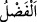
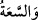

başladı. Yeminini bozduğu için keffâretini ödedi ve “Allah’a yemin olsun ki onu asla
kesmeyeceğim.” dedi.[136]
Taberânî’nin el-Mu’cemu’l-kebîr’inde verilen bilgiye göre bu âyetin nüzûlünden
sonra Ebûbekir (r.a.) Mistah’a iftirâ hâdisesinden önce verdiği nafakanın iki katını
vermeye başlamıştır.
Bu âyet, bir hususta yemin edip sonra onu bozmanın daha iyi olacağını düşünen
kimsenin, yeminini bozup keffâretini ödemesinin câiz olduğuna delildir. Böyle bir kimse
üç türlü sevap kazanır. Birincisi Allah’ın emrine uyma sevabı, ikincisi akrabasıyla
bağlantı kurup ona iyilikte bulunma sevabı, üçüncüsü de yeminin keffâretini ödeme
sevabı.
Bu âyetten çıkarılacak bazı sonuçlar vardır:
1- Âlimler bu âyeti Hz. Ebûbekir (r.a.)’ın fazîlet ve şerefine delil saymışlardır. Çünkü
Allah Teâlâ onu, (doğrudan değil de) üçüncü şahıs kipiyle yaptığı işten nehyetmiş,
fazîletini nassla belirtmiş ve şânını yüceltmek için kendisinden çoğul lafzıyla
bahsetmiştir. Nitekim kavmin reisine ve büyüğüne: ‘Şöyle şöyle yapmasınlar’ diye hitâb
edilir.
Ebûbekir (r.a.)’ın fazîletini inkâr edenler âyette geçen “__WORD__ kelimesini malın
çokluğuna yormuşlardır. Halbuki “__WORD__ sözünün malın çokluğu mânâsında olduğu
açıktır. Bu durumda tekrar olmuş olur. Böylece Hz. Ebûbekir (r.a.)’ın Rasûlullah
(s.a.)’den sonra insanların en fazîletlisi olduğu âyetle sâbit olmuş olur.
İnsânü’l-uyûn’da der ki: “Allah Teâlâ’nın Ebû Bekir Sıddîk (r.a.)’ı fazîlet sâhibi
olarak vasfetmesi, Rasûlullah (s.a.)’in de onu bu şekilde vasfetmesine uygun
düşmektedir: Rivâyete göre Ali (k.v.) Hz. Peygamber (s.a.)’in huzûruna vardı. Ebûbekir
(r.a.) da Rasûlullah (s.a.)’in sağında oturuyordu. Hz. Ali’yi görünce yerinden çekildi ve
onu kendisi ile Rasûlullah (s.a.)’in arasına oturttu. Bunun üzerine Rasûlullah (s.a.)’in
yüzü sevinçten ay gibi parladı ve: “Fazîlet ehlinin fazîletini ancak fazîlet sâhipleri
bilir.”[137] buyurdu.
Hakîm Senâî der ki:
Hz. Ebû Bekir o kadar kerem ve fazîlet sâhibidir ki
Fazlın sâhibi olan Allah onu “fazîletli” diye andı
Bu yüzden avamın gözünden uzakta idi
Aylar ve yıllar boyu gece gündüz her işinde
Mağarada iken ikinin ikincisiydi
2- Âyet kötülük yapana iyilik yapmaya, ona karşılık vermemeye ve bununla meşgul
olmayı terk etmeye dâvet konusunda yeterlidir. Enes (r.a.)’ın şöyle dediği rivâyet
edilmiştir: Bir gün Rasûlullah (s.a.) otururken azı dişleri gözükünceye kadar güldü. Hz.
Ömer (r.a.): “Anam babam sana fedâ olsun yâ Rasûlallah, sizi güldüren nedir?” diye